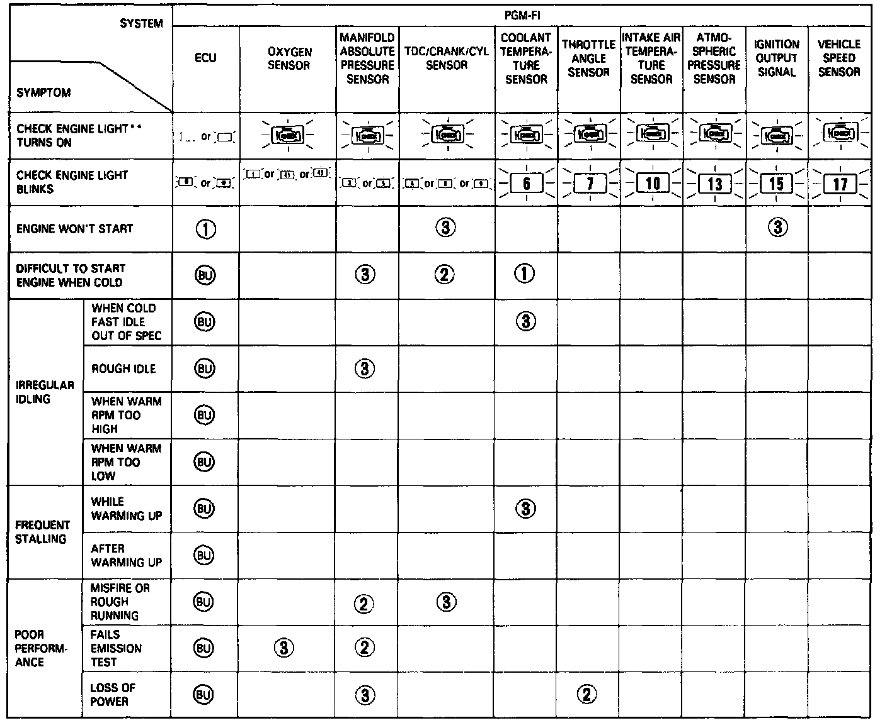

DTC List - Fuel and Emissions
Diagnostic Trouble Codes
- If codes other than those listed here are indicated, verify the code. If the code indicated is not listed here, replace the ECU
- The Check Engine light may come on, indicating a system problem when, in fact, there is a poor or intermittent electrical connection. First, check the electrical connections, clean or repair connections if necessary.


TROUBLESHOOTING GUIDE